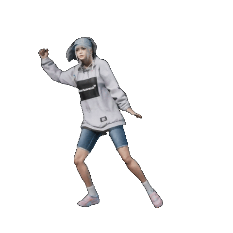

让片刻，动起来。
浏览器本地处理视频里的好瞬间，一键变成透明 GIF。
01选择视频
原视频完整转换把视频里的瞬间留下来
MP4 / MOV / WebM · 拖放或点击上传
02背景处理
自由选择适合黑幕、白底、绿幕等纯色背景，保留主体细节。
03参数设置
GIF · 无限循环数值越小质量越高，文件也会更大。
100% 为原始尺寸，缩小比例可减小文件。
值越大，移除的相近背景色越多。
背景颜色与取色
选择视频后，可直接点击画面采样背景色。
默认也移除手臂等围出的封闭背景。开启保护后，这些空隙可能被保留；绿幕素材建议保持关闭。
正在读取视频0%
请保持页面打开
无需上传 · 无水印 · 原视频不变
效果预览
透明背景效果示例

你的好瞬间，即将在这里动起来
先选择一段视频开始制作
预览底色
制作完成
棋盘格仅用于展示透明区域，不会出现在导出的 GIF 中。
你的素材，只为这次创作
视频不上传，转换全程在你的浏览器完成。关闭页面后不会保留素材与结果，请及时保存。